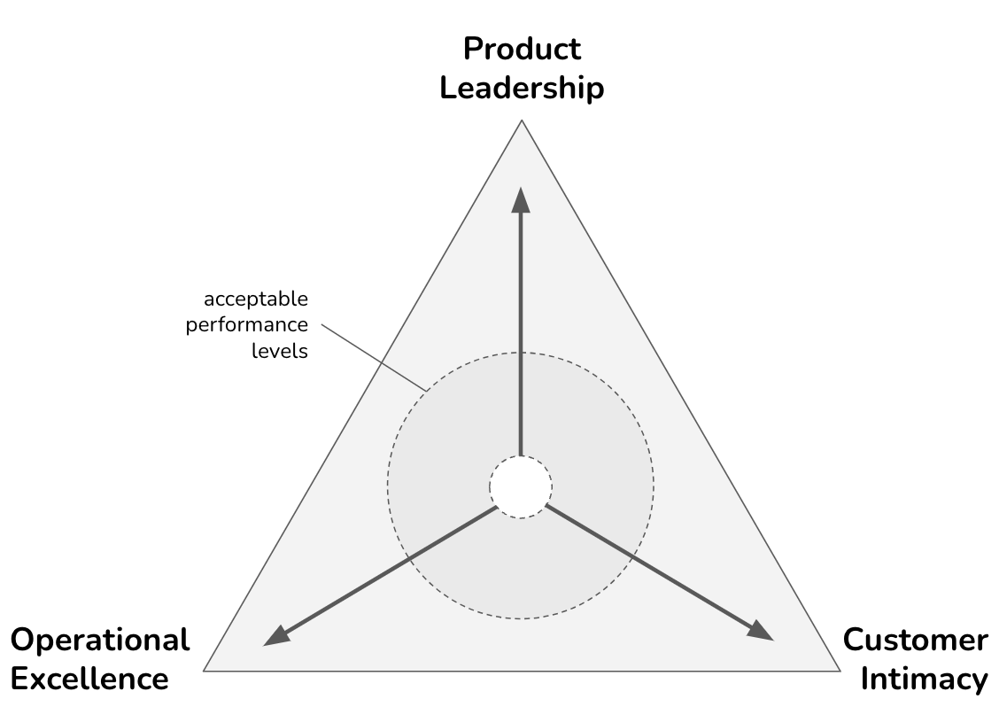

Achieving Market Leadership
IN THIS SECTION, YOU WILL: Learn about the Discipline of Market Leaders framework and its three strategic paths: operational excellence, product leadership, and customer intimacy.
KEY POINTS:
- Market leadership strategies require choosing operational excellence, product leadership, or customer intimacy as the primary focus.
- Operational excellence requires automation, process optimization, and cost-efficient technology.
- Product leadership emphasizes agility, rapid innovation, and integrated research and analytics.
- Customer intimacy focuses on personalized experiences, supported by CRM, analytics, and omnichannel integration.
- Strategic IT alignment means architecture must reinforce the company’s strategic choice while remaining adaptable.
Achieving market leadership requires a company to be explicit about the kind of value it is trying to win on. The Discipline of Market Leaders by Michael Treacy and Fred Wiersema remains useful because it forces that choice into the open. A company can try to compete through operational excellence, product leadership, or customer intimacy. It still needs to be competent in all three, but it rarely becomes exceptional by treating all three as equal priorities.
For architects, that is more than a strategy lesson. It is a design constraint. The systems, platforms, processes, and governance models that support operational excellence are not the same as those that support product leadership or customer intimacy. When architecture ignores that, it often ends up optimizing for everything and truly serving nothing.
Strategic Paths to Market Leadership
The Discipline of Market Leaders highlights a company’s three strategic paths to achieve market leadership: operational excellence, product leadership, and customer intimacy (Figure 8):
-
Product Leadership companies provide leading-edge products or practical new applications of existing products or services. Their core process includes invention, commercialization, market exploitation, and disjoint work procedures. Exemplars are Apple, Tesla, Nike, Rolex, and Harley-Davidson.
-
Operational Excellence companies provide reliable products and services at competitive prices, delivered with minimal difficulty or inconvenience. Their value proposition is guaranteed low price and hassle-free service. Which also includes time spent to purchase, future product maintenance, and ease of getting swift and dependable service. The core processes include product delivery, basic service cycle + build on standards, no frills fixed assets. Exemplars are IKEA, McDonald’s, Starbucks, Walmart, and Southwest Airlines.
-
Customer Intimacy companies do not deliver what the market wants but what a specific customer wants. Creating results for carefully selected and nurtured clients. Continually tailors products/services to customers to offer the ‘best total solution.’ Exemplars are Salesforce, LMS Providers, HomeDepot.

Figure 8: The Discipline of Market Leaders model postulates that any successful business needs to maintain at least “acceptable” levels of performance in each of the three dimensions (operational excellence, product leadership, and customer intimacy) but would need to choose one of them to become a market leader in its field.The model argues that every successful business needs at least acceptable performance in all three dimensions, but a market leader usually chooses one discipline as its primary differentiator. That choice has consequences. To become exceptional in one dimension, the company has to accept trade-offs in the others. Each value discipline therefore implies a different operating model, a different investment profile, and a different set of architectural priorities.
IT Architecture Role
I have found the model useful in two ways:
- It helps challenge strategies that are too ambitious or internally contradictory.
- It helps shape the architecture of the company’s IT landscape in a way that fits the actual strategy.
Each direction represents a unique value proposition and requires specific architectural considerations to support it effectively.
- Operational Excellence: This path focuses on delivering products or services at the lowest cost and highest efficiency. The IT architecture should streamline processes, automate repetitive tasks, and optimize resource allocation. It involves leveraging technologies like enterprise resource planning (ERP) systems, supply chain management tools, and process automation solutions to achieve operational efficiency. Scalability, reliability, and cost-effectiveness are critical factors in architectural design.
- Product Leadership: This path involves developing and delivering innovative and superior products or services that differentiate an organization from its competitors. The IT architecture should prioritize flexibility, agility, and the ability to support rapid innovation. Architecture typically emphasizes integrating product development and research systems, data analytics capabilities, and collaboration tools to facilitate idea generation, prototyping, and testing. Ensure that the architecture enables seamless integration with external partners and suppliers to foster a culture of innovation and continuous improvement.
- Customer Intimacy: This path focuses on building strong customer relationships and delivering personalized experiences. The IT architecture should enable customer data collection, analysis, and utilization to gain insights and provide customized solutions. Architectural considerations frequently include complex customer relationship management (CRM) systems, data analytics platforms, and customer engagement tools. Integration with various touchpoints, such as web portals, mobile applications, and social media channels, is essential to deliver a seamless and personalized customer experience.
Using the Discipline of Market Leaders in architecture work means treating strategy as a practical design input. Technology choices, delivery models, governance, and platform investments should reinforce the chosen path rather than dilute it.
This does not mean organizations must follow the model mechanically. Most companies contain elements of multiple disciplines. But the model is still useful because it forces architectural choices to answer a harder question: what are we actually trying to be best at?
To Probe Further
- The Discipline of Market Leaders by Michael Treacy and Fred Wiersema, 1993.
Questions to Consider
Use the following questions to test how clearly your organization understands market leadership and what it would take to achieve it.
- Which of the three strategic paths—operational excellence, product leadership, or customer intimacy—best describes your organization’s current market approach?
- How does your company’s IT architecture support its chosen market leadership strategy? Are there areas where alignment could be improved?
- If your organization attempted to excel in multiple strategic paths simultaneously, what challenges would arise in terms of IT infrastructure and business operations?
- How does IT architecture contribute to cost efficiency in an operational excellence strategy?
- In what ways can technology enable product leadership, particularly in fostering innovation and speeding up product development cycles?
- How critical is data analytics and CRM in supporting a customer intimacy strategy, and what architectural components are needed to ensure personalized customer engagement?
- What risks could emerge if IT architecture is not well-aligned with the company’s primary market strategy?
- How can companies ensure that their IT landscape remains flexible enough to shift between strategic paths if market conditions change?
- What role does automation play in improving efficiency across different market leadership strategies, and how should it be architected?
- How should organizations balance investments in core IT infrastructure while also maintaining agility for innovation and customer engagement?
Appendix 5: Strategy Notes |
|||
| ← | → | ||